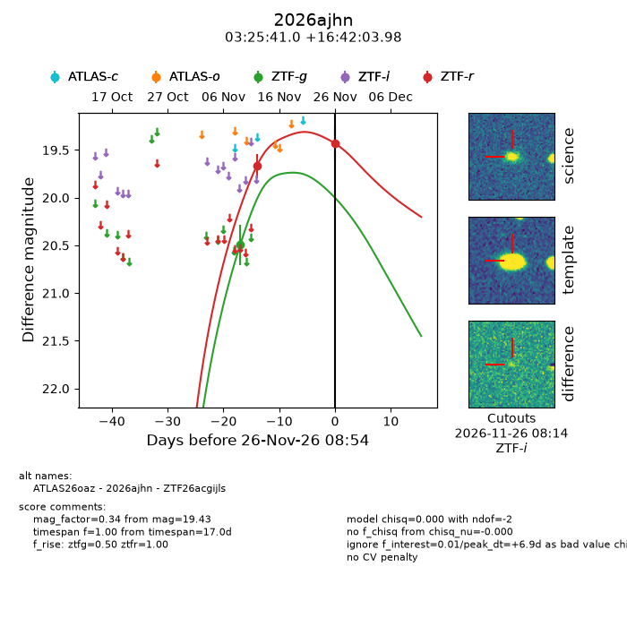
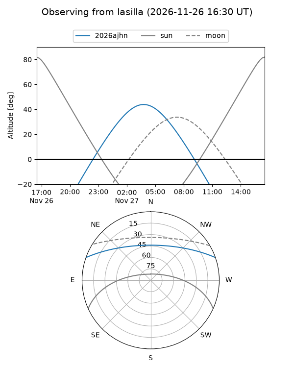
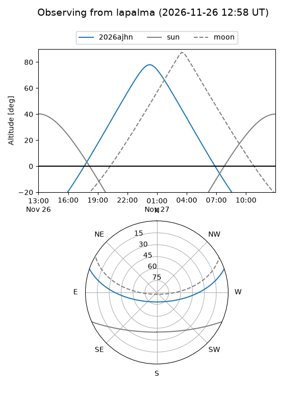
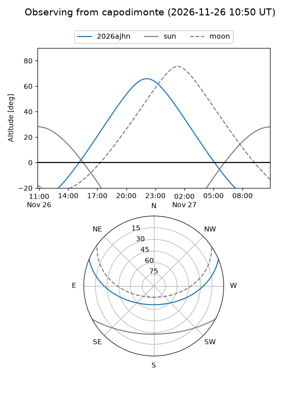
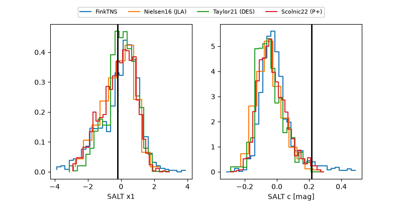

2026ajhn
Target 2026ajhn at 2026-11-26 08:56
Aliases and brokers:
FINK-ZTF: ztf.fink-portal.org/ZTF26acgijls
Lasair-ZTF: lasair-ztf.lsst.ac.uk/objects/ZTF26acgijls
ALeRCE-ZTF: alerce.online/object/ZTF26acgijls
YSE-PZ: ziggy.ucolick.org/yse/transient_detail/2026ajhn
TNS name: wis-tns.org/object/2026ajhn
Direct TNS query: direct search
alt names
ZTF26acgijls (ztf,fink_ztf)
2026ajhn (tns,yse)
ATLAS26oaz (atlas)
Coordinates:
equatorial (ra, dec) = 51.4209,+16.70110
equatorial (HMS+DMS) = 03:25:41.02,+16:42:03.98
galactic (l, b) = (167.9215,-32.37929)
Flags:
peak dt: +6.9
Photometry:
last ztfg=20.49, ztfr=19.43
1 ztfg, 2 ztfr detections
Lightcurve

Visibility



Additional plots
